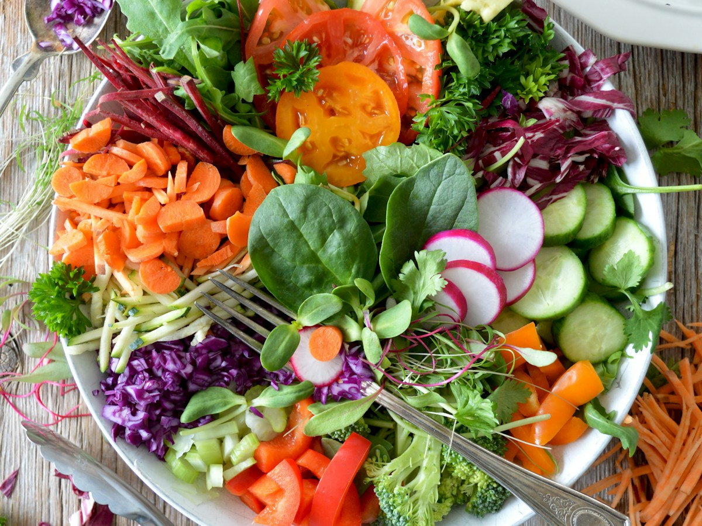
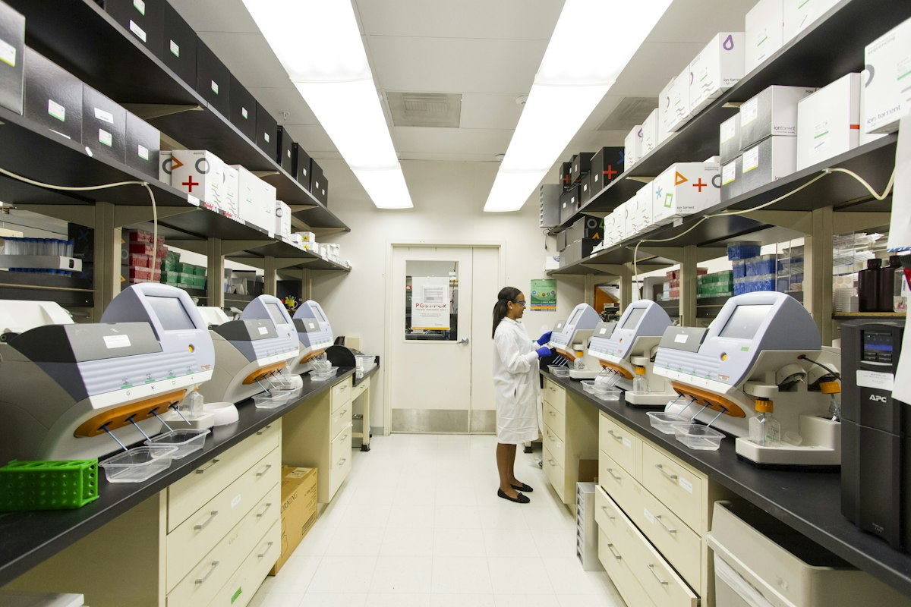

Fresh Agricultural Produce Directly from Growers
Cultivated with care, harvested at peak maturity, and graded under strict quality standards. Sourced directly from our collective of smallholder farmers.

From Soil to Shelf: Complete Purity & Traceability
Every grain, pulse, spice, and vegetable in our catalog is grown by registered GreenRoots shareholders practicing sustainable agriculture, zero chemical adulteration, and water-efficient stewardship.
FSSAI Certified
Audited hygienic handling and safe storage across all processing hubs.
100% Single-Origin
Traceable to the specific village cluster and farmer producer group.
Zero Middlemen
85% of commodity sale proceeds go directly to grower bank accounts.
Bulk & Retail Packs
Flexible packaging options from 1kg retail pouches to 50kg wholesale bags.
Agricultural Commodities & Farm Produce
Search by crop name or filter across categories to view current available stocks and specifications.
No agricultural products match your search or selected filter.
Our Core Produce Categories & Harvest Profiles
Carefully cultivated across river basin alluvial soils and rain-fed drylands by 4,250+ certified smallholder members.
Food Grains & Cereals
Aged Single-Origin BasinsTraditional non-GMO paddy varieties, aged whole raw rice, and fiber-dense unpolished brown rice cultivated in Cauvery silt fields. Low breakage rates (< 2%) and naturally sun-dried.
- Moisture: Strictly ≤ 13.0%
- Packaging: 25kg / 50kg HDPE
- Peak Harvest: Jan–Feb / Oct–Nov
Heritage Dryland Millets
Low-Glycemic Smart FoodFoxtail (Thinai), Finger Millet (Ragi), Pearl Millet (Bajra), and Kodo millets grown with zero synthetic chemicals in dryland red soils. High dietary fiber and rich mineral density.
- Machine destoned & graded
- Gluten-free diet certified
- Year-round forward contracts
Pulses & Legumes
High-Protein Soil EnrichersBold whole green gram (moong), unpolished black gram (urad), and split toor dal harvested from nitrogen-fixing rotation plots. Free from synthetic oil or artificial color polish.
- 100% Unpolished & pure
- Protein content: 22%–25%
- Germination rate: ≥ 92%
Fresh Farm Vegetables
Daily Morning HarvestsHarvested pre-dawn across river valleys: vine-ripened tomatoes, tender country okra, baby brinjals, bottle gourds, and native leafy greens sorted and packed within 4 hours of picking.
- Pre-cooled crate logistics
- Zero artificial wax coatings
- Direct supermarket delivery
Seasonal Orchard Fruits
Naturally Tree-RipenedAuthentic Nendran bananas, high-brix guava, seasonal sweet limes, and ruby pomegranates from foothill micro-climates. Ripened without carbide gas or chemical accelerants.
- Carbide-free natural ripening
- Graded by diameter & brix
- Export-grade packaging crates
Spices & Organic Specials
Verified Potency & AromaSalem turmeric fingers boasting 4.2%+ verified curcumin, Malabar extra-bold black peppercorns, and wood-pressed edible sesame oils extracted at village women SHG units.
- Lab tested curcumin content
- Steam sterilized whole peppercorns
- Vacuum nitrogen pouch packaging

Standardized Inspection & Grain Grading
Every lot collected from farmers undergoes structured 4-step quality verification before packaging and dispatch, guaranteeing consistency for commercial buyers.
NIR Moisture Calibration
Automated moisture screening keeps grain lots strictly within 12–14% target limits to avoid pest damage and preserve shelf-life.
Mechanical Destoning & Cleaning
High-efficiency air-screen cleaners and gravity separators eliminate chaf, foreign matter, and broken kernels down to < 0.5%.
Pesticide & Aflatoxin Screening
Periodic testing ensures adherence to maximum residue limits (MRL) under FSSAI and international APEDA standards.
Food-Grade Nitrogen Flush Packaging
Custom packaging with multi-wall jute, HDPE, or vacuum-sealed pouches preserves aroma, taste, and seed viability.
Quality Assurance Benchmarks & Testing Standards
Every commercial consignment dispatched from our central agro depot is accompanied by a certified batch Certificate of Analysis (COA).
| Quality Parameter | Commodity Scope | GreenRoots Standard | FSSAI / Mandi Baseline | Verification Methodology |
|---|---|---|---|---|
| Moisture Content | Paddy, Millets, Pulses | ≤ 12.0% | ≤ 14.0% | Digital NIR Grain Moisture Meter (ISO 712) |
| Foreign Matter & Chaff | All Cereals & Grains | ≤ 0.5% | ≤ 2.0% | Air-screen destoner & mechanical sieve analysis |
| Broken / Shriveled Grains | Milled Rice & Millets | ≤ 2.0% | ≤ 5.0% | Optical photo-sensor length grader |
| Aflatoxin B1 / Total | Groundnut & Food Grains | ≤ 4.0 ppb | ≤ 15.0 ppb | Fluorometric & ELISA immunoassay testing |
| Chemical Pesticide Residue | Organic Certified Produce | Zero / Non-Detect | MRL Thresholds | GC-MS/MS & LC-MS/MS multi-residue screen |
| Curcumin Percentage | Turmeric Fingers & Powder | ≥ 4.2% | ≥ 2.5% | Spectrophotometric UV absorbance (ASTA 18.0) |
Require Bulk Commercial Shipments or Custom Milling?
We supply multi-ton consignments of traditional rice, millets, pulses, and spices to mills, consumer brands, retail chains, and government institutions.